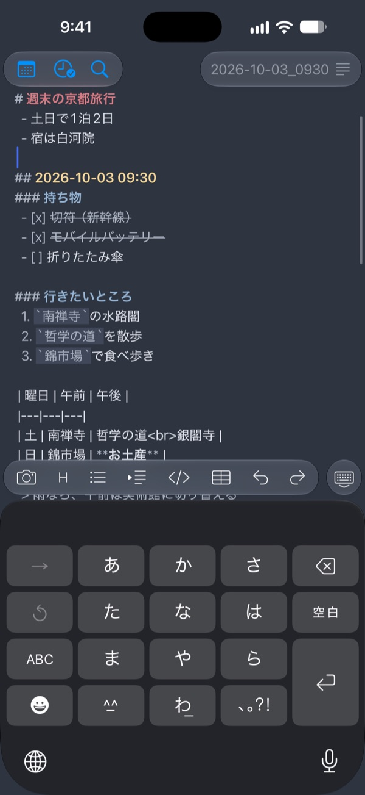
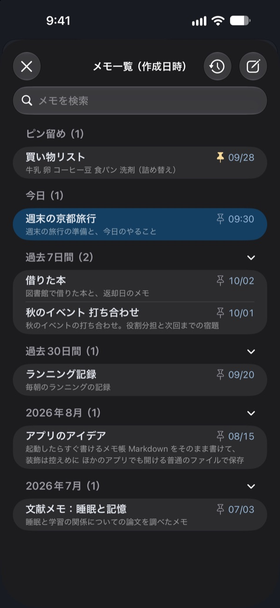
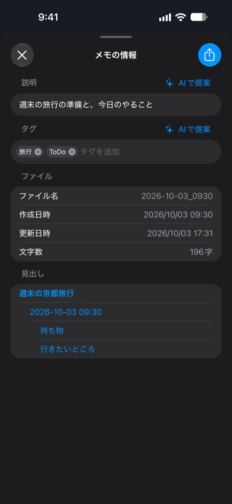
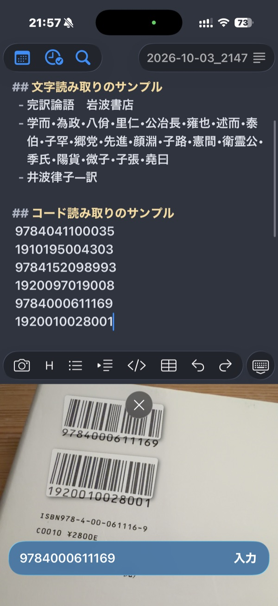

SokuMemo は「思いついたことをすぐ書ける」メモアプリ（テキストエディタ）です。自分用に作ったものを公開しています。広告はなく、無料で使えます。



開いたらすぐ書ける
- 起動すると、今日のメモがもう書き込める状態で開きます
- タイトルの入力も保存の操作も要りません（自動保存）
- 同じ日に再度起動すると、その日の最新のメモの末尾に移動した状態で開きます
- アプリを閉じずにバックグラウンドに残しておいた場合は、再びアクティブにした時に前回の編集箇所から作業を再開できます
- 時刻見出しのボタンで、1日のメモを時間ごとに区切れます
Markdown 記法に対応
- 見出し、箇条書き、番号付き、チェックボックス、引用、コード、表などに対応
- 記号は残したまま、見出しの太字や色、箇条書きの字下げなどで読みやすく表示します
- 改行すると箇条書きやチェックボックスが自動で続きます。チェックボックスは
[ ]をタップして付け外しできます - キーボードの上のボタンで、記号を打たずに整形できます
- 表はひな形をボタンで入れられ、「表を見る」でマス目にしてきれいに見られます
カメラで読み取れる
- カメラで文字を読み取って、そのままメモに入力できます
- QR コードやバーコードも読み取れます。コード類は続けて読み取ることができます
- NW7(CODABAR)はスタート/ストップキャラクタを自動除外します
説明やタグなどで整理・検索できる
- メモごとに説明（概要）とタグを付けられます
- 説明とタグはiPhone上のAIに提案してもらうこともできます（Apple Intelligence 対応機種のみ。ローカルで動作し外部には情報が漏れません）
- 全メモを、本文・説明・タグで検索できます
- 最近編集したメモを「編集履歴」ですぐに呼び出せます
- よく使うメモはピン留めして，一覧の一番上に置いておけます
- メモの文字数や作成・更新の日時も確認できます
メモ内の情報をすぐ調べられる
- 選択した情報を，Google，カーリル，PubMed，CiNii Research，Amazonで検索できます（読み取ったISBNを選んで，本を調べることもできます）
メモは汎用形式で iPhone の中に保存される
- メモは、一般的な Markdown ファイル（.md）として iPhone の中に保存されます。独自の形式やデータベースは使っていません
- 説明とタグも、メモの冒頭に YAML のフロントマター（description・tags）として書き込まれ、Obsidian など、ほかの Markdown アプリでもそのまま利用できます
- 「ファイル」アプリから見たり取り出したりでき、共有でほかのアプリにも渡せます
- アカウント登録は不要です。データを集めることもありません（プライバシーポリシー）
カメラ+文字列検索の利用例

- 紙の論文のタイトルを読み取って、すぐに PubMed などで検索できます
- 本の ISBN を読み取って、カーリルで検索して、家の近くの図書館にあるかなどを確認できます
- ISBN や資料 ID を連続して読み取れるので、簡易的なバーコードコレクタ代わりに使えます
動作環境
- iPhone（iOS 26 以降）
- AI による説明・タグの提案は、Apple Intelligence に対応した機種で、設定がオンのときに使えます（実験的な機能です）
使い方や困ったときはサポートをご覧ください。